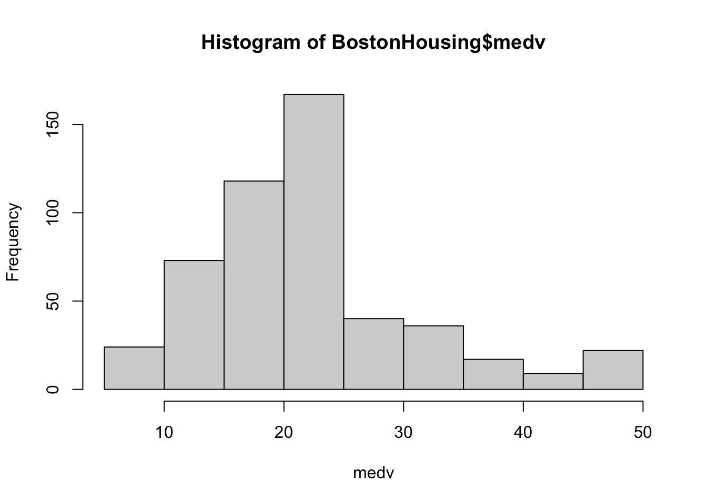
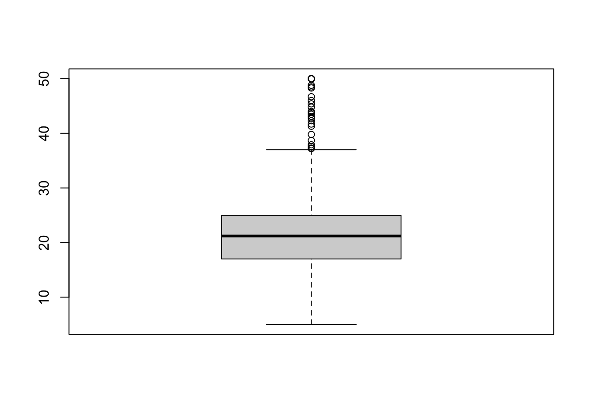

crim zn indus chas nox
Min. : 0.00632 Min. : 0.00 Min. : 0.46 0:471 Min. :0.3850
1st Qu.: 0.08205 1st Qu.: 0.00 1st Qu.: 5.19 1: 35 1st Qu.:0.4490
Median : 0.25651 Median : 0.00 Median : 9.69 Median :0.5380
Mean : 3.61352 Mean : 11.36 Mean :11.14 Mean :0.5547
3rd Qu.: 3.67708 3rd Qu.: 12.50 3rd Qu.:18.10 3rd Qu.:0.6240
Max. :88.97620 Max. :100.00 Max. :27.74 Max. :0.8710
rm age dis rad
Min. :3.561 Min. : 2.90 Min. : 1.130 Min. : 1.000
1st Qu.:5.886 1st Qu.: 45.02 1st Qu.: 2.100 1st Qu.: 4.000
Median :6.208 Median : 77.50 Median : 3.207 Median : 5.000
Mean :6.285 Mean : 68.57 Mean : 3.795 Mean : 9.549
3rd Qu.:6.623 3rd Qu.: 94.08 3rd Qu.: 5.188 3rd Qu.:24.000
Max. :8.780 Max. :100.00 Max. :12.127 Max. :24.000
tax ptratio b lstat
Min. :187.0 Min. :12.60 Min. : 0.32 Min. : 1.73
1st Qu.:279.0 1st Qu.:17.40 1st Qu.:375.38 1st Qu.: 6.95
Median :330.0 Median :19.05 Median :391.44 Median :11.36
Mean :408.2 Mean :18.46 Mean :356.67 Mean :12.65
3rd Qu.:666.0 3rd Qu.:20.20 3rd Qu.:396.23 3rd Qu.:16.95
Max. :711.0 Max. :22.00 Max. :396.90 Max. :37.97
medv
Min. : 5.00
1st Qu.:17.02
Median :21.20
Mean :22.53
3rd Qu.:25.00
Max. :50.00
Month Ridership Amtrak.Ridership.Number.of.Passengers...in.thousands. X X.1
1 Jan-91 1709 NA NA NA
2 Feb-91 1621 NA NA NA
3 Mar-91 1973 NA NA NA
4 Apr-91 1812 NA NA NA
5 May-91 1975 NA NA NA
6 Jun-91 1862 NA NA NA
7 Jul-91 1940 NA NA NA
X.2
1 NA
2 NA
3 NA
4 NA
5 NA
6 NA
7 NA
str(amtrak)
'data.frame': 159 obs. of 6 variables:
$ Month : chr "Jan-91" "Feb-91" "Mar-91" "Apr-91" ...
$ Ridership : int 1709 1621 1973 1812 1975 1862 1940 2013 1596 1725 ...
$ Amtrak.Ridership.Number.of.Passengers...in.thousands.: logi NA NA NA NA NA NA ...
$ X : logi NA NA NA NA NA NA ...
$ X.1 : logi NA NA NA NA NA NA ...
$ X.2 : logi NA NA NA NA NA NA ...
summary(amtrak)
Month Ridership
Length:159 Min. :1361
Class :character 1st Qu.:1698
Mode :character Median :1831
Mean :1822
3rd Qu.:1967
Max. :2223
Amtrak.Ridership.Number.of.Passengers...in.thousands. X
Mode:logical Mode:logical
NA's:159 NA's:159
X.1 X.2
Mode:logical Mode:logical
NA's:159 NA's:159
dim(amtrak)
[1] 159 6
5.3 기본적 시각화
히스토그램 (Histogram)
상자그림 (Boxplots)
막대 차트 (Bar charts)
선 그래프 (Line graphs)
산점도 (Scatter plots)
5.3.1 히스토그램 (histogram)
주택가격의 중앙값(medv)의 히스토그램을 살펴보자.
hist(BostonHousing$medv, xlab ="medv")

5.3.2 상자 그림 (box plot)
상자그림의 기본 문법은 다음과 같다.
boxplot(BostonHousing$medv)

상자 그림은 다음과 같이 그린다.
위쪽 이상점은 Q3 + 1.5*(Q3-Q1)위에 있는 점으로 정의된다. 아래쪽 이상점도 비슷하게 정의된다.
박스: Q1부터 Q3까지의 범위 (가운데 선은 Q2 중간값)
박스의 위쪽/아래쪽 bar는 maximum/minimum of non-outliers
상자그림은 여러 하위군을 비교하기에도 좋다. 다음은 주택가격 중앙값을 찰스강변(1) or 찰스강변 아님(0)으로 구분하여 상자그림을 그렸다.
평균 주택가격을 찰스강변 지역(chas=1), 찰스강변 이외지역(chas=0)으로 구분하여 막대그래프로 그리고자 한다.
먼저 각 지역들에 대한 요약값을 계산한다.
data.for.plot <-aggregate(BostonHousing$medv, by =list(BostonHousing$chas), FUN = mean)names(data.for.plot) <-c("CHAS", "MeanMEDV")print(data.for.plot)
CHAS MeanMEDV
1 0 22.09384
2 1 28.44000
위와 같이 한 컬럼이 범주, 한 컬럼이 값을 뜻하는 테이블이 있으면 막대그래프를 그릴 수 있다.